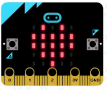
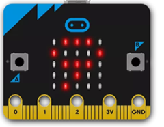

Follow the instructions below to flash Your Micro:bit with our temperature recorder!
-
Start by Copying the Code below
Copy Code
-
Hit the link below to get redirected to Micro:bit's Python Environment
Python Editor
- Replace any text with the copied code in the online editor
- Connect Your Micro:bit to any usb port on your computer
- Press the connect button at the top to connect your Micro:bit
- Press the flash button to flash your Micro:bit
Confirm your Micro:bit is flashed
- See this image on your Micro:bit?

- Shake your Micro:bit!

If you see a number on the screen, its your room temperature
Your Micro:bit is now ready to record temperature data
- Place your Micro:bit outside in a safe place with a power source
- Press Button B on your Micro:bit to start recording Temperature
- Keep your microbit for atleast 5 days to record meaningful data